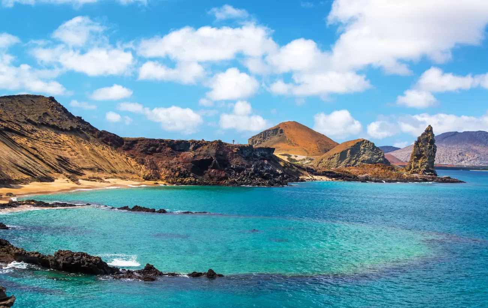

<!DOCTYPE html>
<html lang="en">
    <head>
        <meta charset="UTF-8" />
        <title>Title</title>
        <style>
            h1{
                color:#b1ede9;
                background-color: rgba(16, 119, 175, 0.74);
                text-align: center;
                font-size:30px;
                font-family:monospace;  
                
              }
            
            p {
                color: #caecff; 
                font-size: 25px;
              }
            
            body {
               background-image: url(Water.jpeg);
               color: #caecff    
              }
            
            img {
                display:block;
               margin: 5px auto;
              }       
            
    </style>
    </head>
</html>
<h1>Packing Tips!</h1>
<p>A trip to the Galápagos is a big adventure, so you should come prepared with the right clothes and tools to face the elements. It may be tough to find what you need once you arrive on the islands, especially if you are spending most of your time at sea.</p>
<p><strong> So here's what you should bring...</strong></p>
<h1>Clothes:</h1>
<p>Basic supplies are available at small shops on San Cristóbal and Santa Cruz islands, but with high prices and limited selection, it’s best to bring essentials like sturdy closed-toe walking shoes with durable soles for navigating jagged volcanic rock, as well as sandals or flip-flops for towns and boats; avoid heels, especially on boat-based itineraries where narrow, steep stairways can be challenging to navigate, and don't forget rain gear and weather protection for your camera, as you’ll be traveling on boats and dinghies where sudden rain showers can occur without shelter.</p>
<h1>Health and Comfort:</h1>
<p>Stock up on plenty of insect repellent and water-resistant, high-SPF sunscreen, as Ecuador’s equatorial location intensifies sun exposure during Galápagos excursions, making reef-safe sunscreen particularly recommended to protect the coral and marine life; a hat with a brim is advisable for sun protection during land activities, and if you plan to kayak or snorkel, a rash guard will be useful, while wetsuits are provided for colder water; if you have favorite snorkeling gear, like fins, a mask, and a snorkel, consider bringing them, as provided gear may vary in quality; although seas are generally calm and boat captains choose protected anchoring spots, if you’re prone to motion sickness, pack Dramamine or scopolamine patches, noting that scopolamine is usually unavailable in Latin America; finally, bring a reusable water bottle to fill for day-long excursions and help reduce plastic waste.</p>
<h1>Money:</h1>
<p>There are ATMs on Santa Cruz and San Cristóbal islands, but they can run out of cash, so bring some with you to cover tips. Credit cards are also often accepted at shops and restaurants. The official currency of Ecuador is the U.S. dollar.</p>
<h1><strong>What NOT To Bring:</strong></h1>
<p>The introduction of non-native plant species is considered a top environmental threat to the Galápagos Islands, so do not bring any fruits, vegetables, or plants of any kind with you. Anything that might have seeds or spores clinging to it, such as the soles of your shoes and any outdoor gear or camping equipment, should be washed and inspected thoroughly before being brought to the islands. The threat of invasive plant species is so great that visitors arriving in the Galápagos have to sign an affidavit swearing that they're not bringing in any food, animals, seeds, or dirty camping gear.</p>
